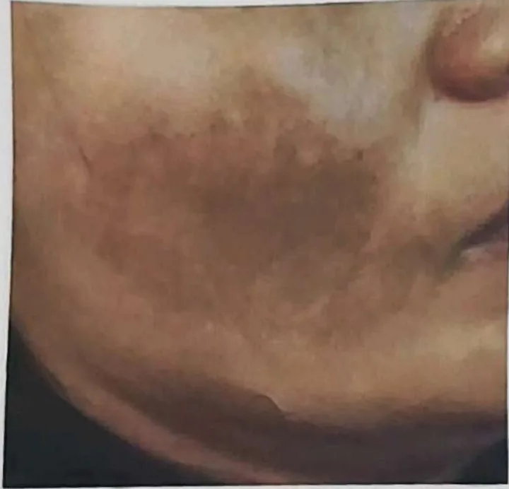
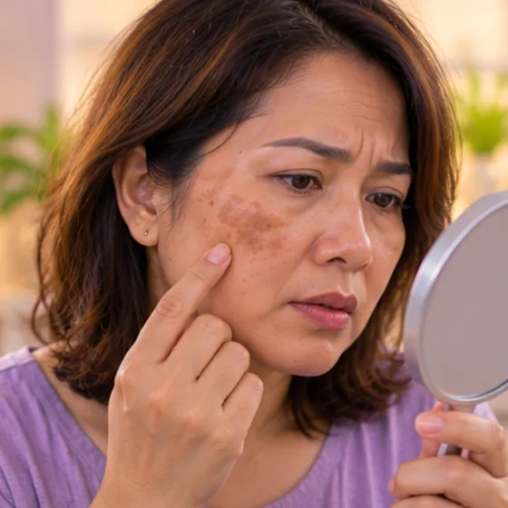
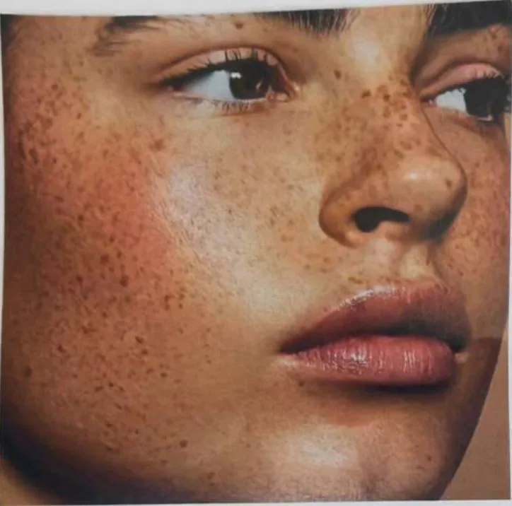
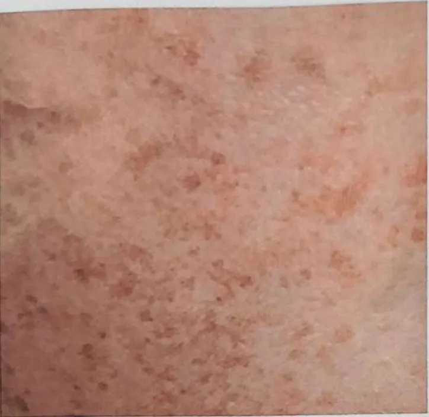
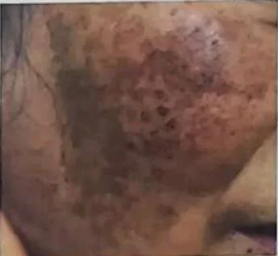
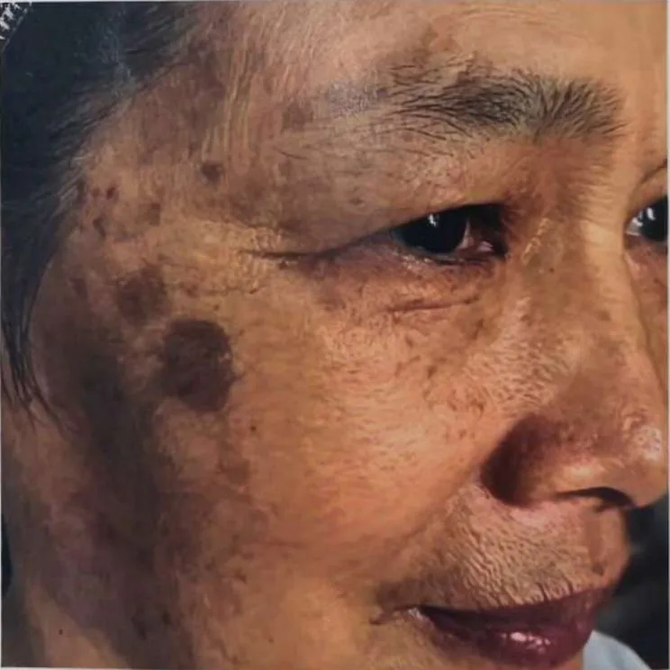
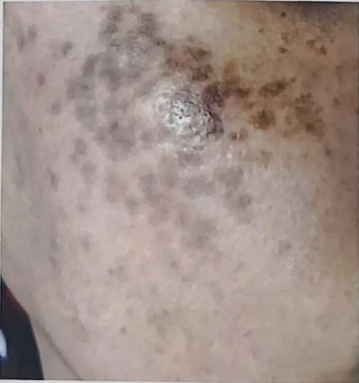
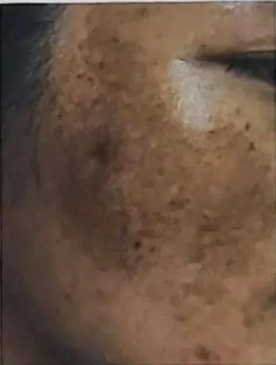

Melasma
Brown or grey-brown patches on the face, often on the cheeks, forehead and upper lip
What it is
Melasma is a common skin colour change. Flat brown or grey-brown patches appear on the face, often on both sides. It is harmless but tends to come back with sun.
- Cheeks, forehead, upper lip
- More common in women
- Flat brown patches, no pain
- Which doctor
- Family doctor or skin doctor (dermatologist)
- Common in
- Adults, more often women and people with brown or darker skin
- Contagious
- No
- Course
- Can last a long time; may fade slowly and often returns with sun
Common signs

Dark patches on the faceHyperpigmentation
Types of dark spots

Freckles: small flat dots, mostly inherited, darker in the sun 
Sun spots: brown spots after sunburn or a lot of sun Melasma: matching brown patches on both cheeks, linked to hormones 
Marks after inflammation: dark marks after acne, wounds or irritation 
Age spots: round, clear-edged spots in middle age and older 
Deep (dermal) spots: grey-brown dots on the cheekbones 
Mixed spots: several types together, often after wrong treatment
How dark spots form
Spots form when the skin makes pigment faster than it can renew itself. Sun protection every day is the most important care.
Not a pigment spot: see a doctor
- A mole that grows or changes colour
- A spot with an uneven edge, that is raised or bleeds
Keep taking your normal medicine and keep seeing your doctor. Our session is a gentle support and does not replace medical care.
More signs
- Usually on the cheeks, forehead, nose or above the lip
- Often looks the same on both sides of the face
- Usually does not hurt, itch or peel
- Patches often look darker after time in the sun
Why it happens
Too much sunUltraviolet exposure 
Hormone changesHormonal change 
The cause is not fully knownIdiopathic
Other causes
- It runs in some families and is more common in brown or darker skin
- Heat, and some skin products or medicines that make skin more sensitive to sun, may add to it
See a doctor first if
- A dark spot that is new, grows, changes colour or shape, bleeds or turns into a sore: see a doctor soon
- A patch that is raised, rough, uneven in colour, itchy or painful
- Skin becomes thin, red, burning or sore after using a lightening or steroid cream
- Dark patches that appear suddenly, spread fast, or come with tiredness, weight loss or feeling unwell
If any apply, please see a doctor before a session.
This page is general information. Please keep taking your normal medicine and keep seeing your doctor.
Keep taking your normal medicine and keep seeing your doctor. Our session is a gentle support and does not replace medical care.
Looking after yourself

Protect yourself from the sunSun protection 
Ask your pharmacistPharmacist advice
More ways to look after yourself
- Wear a wide-brim hat, use an umbrella and stay in the shade in strong sun
- Be gentle with your skin: avoid scrubbing, harsh peels and strong products
- If the patches upset you, talk to a doctor about safe options; results vary and it can return
Tell your therapist
- Pregnancy
- Broken, red or sore skin
- Pacemaker or metal implant
Your therapist will go through this with you before starting.
Questions and answers
What is Melasma?
Brown or grey-brown patches on the face, often on the cheeks, forehead and upper lip. Melasma is a common skin colour change. Flat brown or grey-brown patches appear on the face, often on both sides. It is harmless but tends to come back with sun.
What are the common signs of Melasma?
Dark patches on the face
Why does Melasma happen?
Too much sun · Hormone changes · The cause is not fully known
How can I look after myself with Melasma?
Protect yourself from the sun · Ask your pharmacist
Can an AI Body Master session help with Melasma?
A session is gentle, needle-free meridian support for your wellbeing. It does not treat or cure Melasma and never replaces your medicine or your doctor. Tell your therapist about it before the session starts.
Related conditions
References: General information based on public health sources such as Mayo Clinic, NHS, Cleveland Clinic and NCBI StatPearls.
Page updated: 2026-11-01